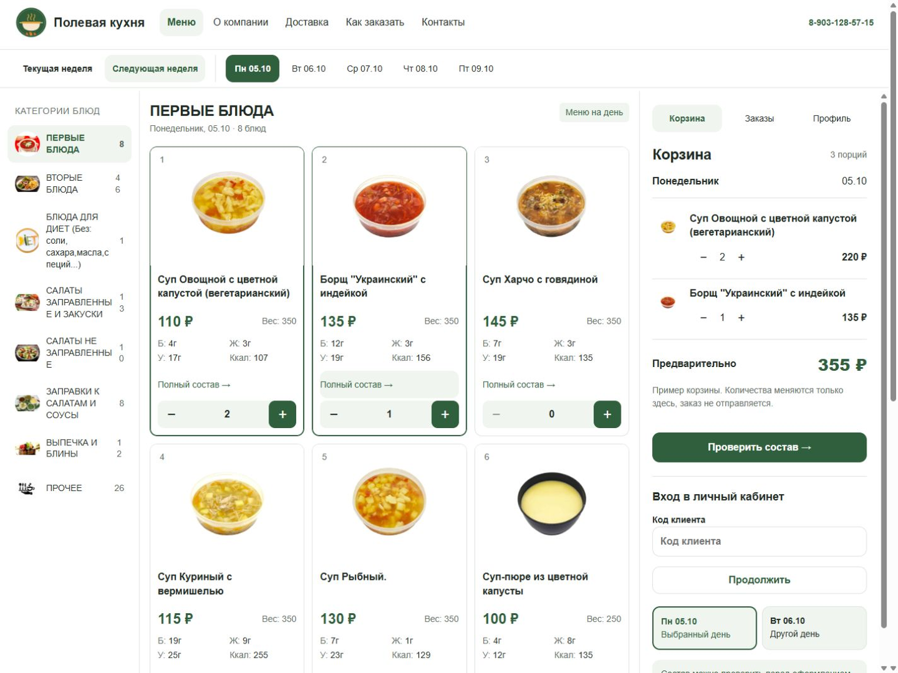
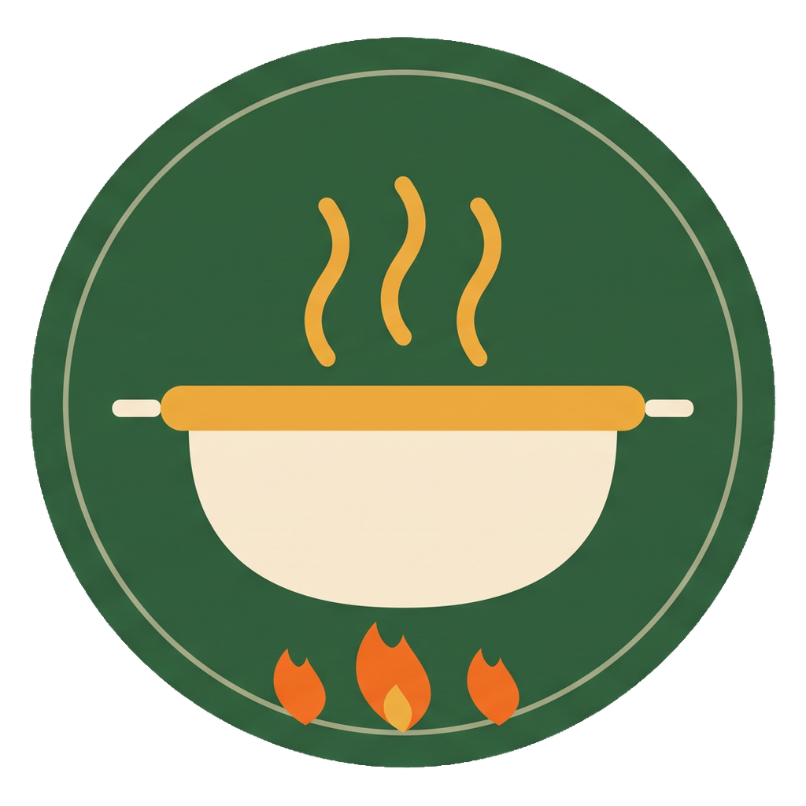
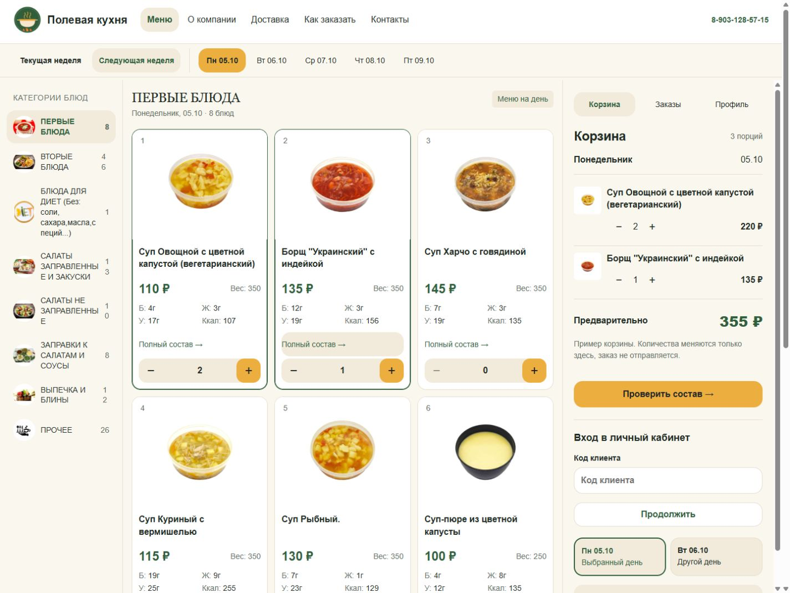
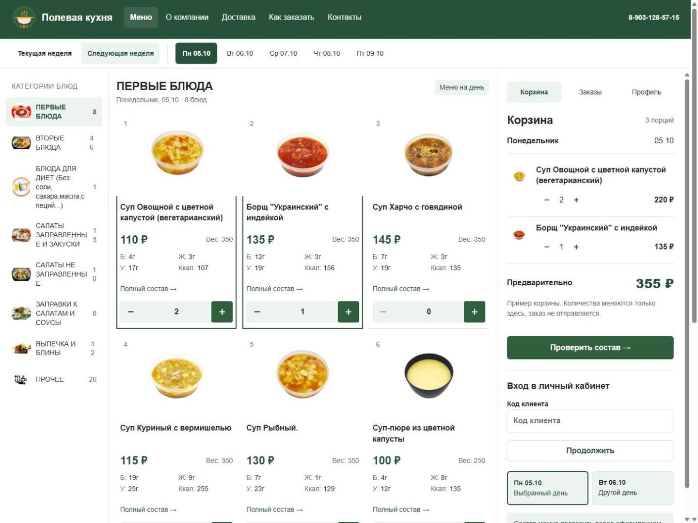

01 / БЕЛЫЙ И ЗЕЛЁНЫЙ
Рекомендованный вариантБелая кухня
Белое пространство, спокойный зелёный и ясные карточки. Фотографии остаются главным акцентом, а новый логотип задаёт цвет действий.


Полевая кухня · примеры нового дизайнаГлавная и меню на компьютере и телефоне. Настоящие блюда, фотографии, цены и состав из меню сайта на 05.10.2026. Выберите направление и откройте работающий пример.
Белое пространство, спокойный зелёный и ясные карточки. Фотографии остаются главным акцентом, а новый логотип задаёт цвет действий.

Тёплые поля вокруг белых фотографий, мягкие формы и золотистые кнопки. Более домашний образ, связанный с кремовым котелком в логотипе.

Тёмно-зелёная шапка, компактные карточки и тонкие линии. Собранный рабочий интерфейс для тех, кто регулярно заказывает обеды.

Переключайте недели, дни и категории. Открывайте фотографию и полный состав. Добавляйте блюда кнопкой «+»: корзина и предварительная сумма пересчитываются отдельно для каждого дня.
На телефоне есть выбор дня, меню, корзина и образец профиля. Внизу страниц — переключатель текста 100% / 160%. Размер окна можно менять без потери выбранного состава.
Это локальные примеры дизайна: вход и отправка заказа не выполняются, персональные скидки не применяются. Данные и фотографии сохранены одним снимком; белый фон фотографий не изменён.
Описание, источники и результаты проверки →